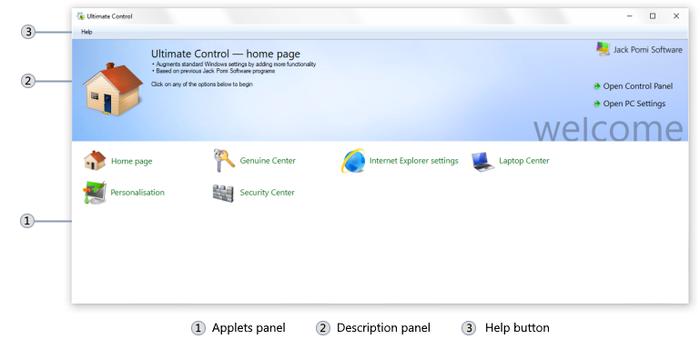

The main window of Ultimate Control is the first one that you encounter after starting a program. It contains links to all of the appletsAn applet is a component of a program that performs a function or a set of functions related to the same field. included in the program. This window is always on while the program is running. If you close it, the program will exit.
|  |
|
Main window of Ultimate Control as seen in Windows 10
|
To open an applet, you should first select it in the applets panel. The description panel will then display the information about what can this applet change in your system settings. To open the applet, click a button that will appear in the bottom right corner of the description panel. The applet is opened. Some applets will open after a few seconds, that depends on how many settings they need to load.